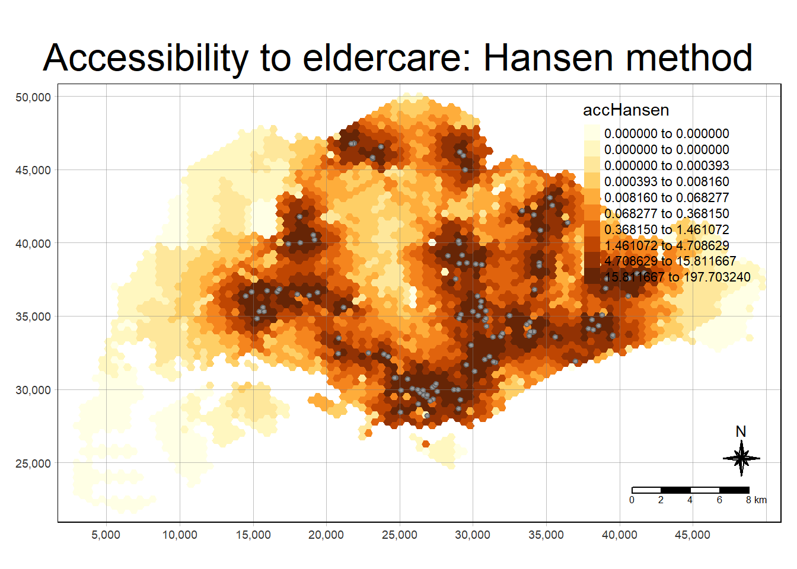

pacman::p_load(tmap, SpatialAcc, sf,
ggstatsplot, reshape2,
tidyverse)Hands-on Exercise 9
1. Overview - Modelling Geographic of Accessibility
In this exercise, we will learn how to model geographical accessibility by using R’s geospatial analysis packages.
2. The Data
- URA Master Plan 2014 subzone boundary GIS data.
- A 250m radius hexagons GIS data.
- GIS data showing location of eldercare service.
- A distance matrix in csv format.
3. Installing and Loading R Packages
The packages that will be used are:
sf: Spatial data handling
spatialAcc: Modelling geographical accessibility
tidyverse, especially readr and dplyr: Attribute data handling
tmap: Thematic mapping
ggplot2: Statistical graphics
ggstatsplot: Statistical analysis
4. Geospatial Data Wrangling
Importing data
mpsz <- st_read(dsn = "data/geospatial", layer = "MP14_SUBZONE_NO_SEA_PL")Reading layer `MP14_SUBZONE_NO_SEA_PL' from data source
`C:\viddyasri\IS415-GAA\Hands-on_Ex\Hands-on_Ex09\data\geospatial'
using driver `ESRI Shapefile'
Simple feature collection with 323 features and 15 fields
Geometry type: MULTIPOLYGON
Dimension: XY
Bounding box: xmin: 2667.538 ymin: 15748.72 xmax: 56396.44 ymax: 50256.33
Projected CRS: SVY21hexagons <- st_read(dsn = "data/geospatial", layer = "hexagons") Reading layer `hexagons' from data source
`C:\viddyasri\IS415-GAA\Hands-on_Ex\Hands-on_Ex09\data\geospatial'
using driver `ESRI Shapefile'
Simple feature collection with 3125 features and 6 fields
Geometry type: POLYGON
Dimension: XY
Bounding box: xmin: 2667.538 ymin: 21506.33 xmax: 50010.26 ymax: 50256.33
Projected CRS: SVY21 / Singapore TMeldercare <- st_read(dsn = "data/geospatial", layer = "ELDERCARE") Reading layer `ELDERCARE' from data source
`C:\viddyasri\IS415-GAA\Hands-on_Ex\Hands-on_Ex09\data\geospatial'
using driver `ESRI Shapefile'
Simple feature collection with 120 features and 19 fields
Geometry type: POINT
Dimension: XY
Bounding box: xmin: 14481.92 ymin: 28218.43 xmax: 41665.14 ymax: 46804.9
Projected CRS: SVY21 / Singapore TMUpdating CRS information
mpsz <- st_transform(mpsz, 3414)
eldercare <- st_transform(eldercare, 3414)
hexagons <- st_transform(hexagons, 3414)Verify:
st_crs(mpsz)Coordinate Reference System:
User input: EPSG:3414
wkt:
PROJCRS["SVY21 / Singapore TM",
BASEGEOGCRS["SVY21",
DATUM["SVY21",
ELLIPSOID["WGS 84",6378137,298.257223563,
LENGTHUNIT["metre",1]]],
PRIMEM["Greenwich",0,
ANGLEUNIT["degree",0.0174532925199433]],
ID["EPSG",4757]],
CONVERSION["Singapore Transverse Mercator",
METHOD["Transverse Mercator",
ID["EPSG",9807]],
PARAMETER["Latitude of natural origin",1.36666666666667,
ANGLEUNIT["degree",0.0174532925199433],
ID["EPSG",8801]],
PARAMETER["Longitude of natural origin",103.833333333333,
ANGLEUNIT["degree",0.0174532925199433],
ID["EPSG",8802]],
PARAMETER["Scale factor at natural origin",1,
SCALEUNIT["unity",1],
ID["EPSG",8805]],
PARAMETER["False easting",28001.642,
LENGTHUNIT["metre",1],
ID["EPSG",8806]],
PARAMETER["False northing",38744.572,
LENGTHUNIT["metre",1],
ID["EPSG",8807]]],
CS[Cartesian,2],
AXIS["northing (N)",north,
ORDER[1],
LENGTHUNIT["metre",1]],
AXIS["easting (E)",east,
ORDER[2],
LENGTHUNIT["metre",1]],
USAGE[
SCOPE["Cadastre, engineering survey, topographic mapping."],
AREA["Singapore - onshore and offshore."],
BBOX[1.13,103.59,1.47,104.07]],
ID["EPSG",3414]]Cleaning and updating attribute fields of the geospatial data
The code below will be used to clean up the data tables by removing unnecessary fields and add new fields for demand and capacity.
eldercare <- eldercare %>%
select(fid, ADDRESSPOS) %>%
mutate(capacity = 100)hexagons <- hexagons %>%
select(fid) %>%
mutate(demand = 100)
Note
Notice that a constant value of 100 is used. This is solely for the purpose of this exercise. In practice, the actual demand of the hexagon and capacity of the eldercare centres should be used.
5. Aspatial Data Wrangling
Importing data
ODMatrix <- read_csv("data/aspatial/OD_Matrix.csv", skip = 0)Tidying distance matrix
Transform the OD matrix from a thin format into a fat format:
distmat <- ODMatrix %>%
select(origin_id, destination_id, total_cost) %>%
spread(destination_id, total_cost)%>%
select(c(-c('origin_id')))Currently, the distance is measured in metres because of the SVY21 projected coordinate system. The code below will be used to convert the unit f measurement from metre to kilometre.
distmat_km <- as.matrix(distmat/1000)6. Modelling and Visualising Accessibility using Hansen Method
Computing Hansen’s accessibility
acc_Hansen <- data.frame(ac(hexagons$demand,
eldercare$capacity,
distmat_km,
#d0 = 50,
power = 2,
family = "Hansen"))colnames(acc_Hansen) <- "accHansen"Convert the data table into tibble format and join the acc_Hansen tibble data frame with the hexagons simple feature data frame:
acc_Hansen <- tbl_df(acc_Hansen)hexagon_Hansen <- bind_cols(hexagons, acc_Hansen)Visualising Hansen’s accessibility
Extracting map extend:
mapex <- st_bbox(hexagons)Use tmap to visualise:
tmap_mode("plot")
tm_shape(hexagon_Hansen,
bbox = mapex) +
tm_fill(col = "accHansen",
n = 10,
style = "quantile",
border.col = "black",
border.lwd = 1) +
tm_shape(eldercare) +
tm_symbols(size = 0.1) +
tm_layout(main.title = "Accessibility to eldercare: Hansen method",
main.title.position = "center",
main.title.size = 2,
legend.outside = FALSE,
legend.height = 0.45,
legend.width = 3.0,
legend.format = list(digits = 6),
legend.position = c("right", "top"),
frame = TRUE) +
tm_compass(type="8star", size = 2) +
tm_scale_bar(width = 0.15) +
tm_grid(lwd = 0.1, alpha = 0.5)
Statistical graphic visualisation
First, we need to add the planning region field into hexagon_Hansen simple feature data frame:
hexagon_Hansen <- st_join(hexagon_Hansen, mpsz,
join = st_intersects)Next, ggplot() will be used to plot the distribution with the boxplot graphical method:
ggplot(data=hexagon_Hansen,
aes(y = log(accHansen),
x= REGION_N)) +
geom_boxplot() +
geom_point(stat="summary",
fun.y="mean",
colour ="red",
size=2)
7. Modelling and Visualising Accessibility using KD2SFCA Method
Computing KD2SFCA’s accessibility
acc_KD2SFCA <- data.frame(ac(hexagons$demand,
eldercare$capacity,
distmat_km,
d0 = 50,
power = 2,
family = "KD2SFCA"))
colnames(acc_KD2SFCA) <- "accKD2SFCA"
acc_KD2SFCA <- tbl_df(acc_KD2SFCA)
hexagon_KD2SFCA <- bind_cols(hexagons, acc_KD2SFCA)
Note
Notice that KD2SFCA is used for family argument.
Visualising KD2SFCA’s accessibility
tmap_mode("plot")
tm_shape(hexagon_KD2SFCA,
bbox = mapex) +
tm_fill(col = "accKD2SFCA",
n = 10,
style = "quantile",
border.col = "black",
border.lwd = 1) +
tm_shape(eldercare) +
tm_symbols(size = 0.1) +
tm_layout(main.title = "Accessibility to eldercare: KD2SFCA method",
main.title.position = "center",
main.title.size = 2,
legend.outside = FALSE,
legend.height = 0.45,
legend.width = 3.0,
legend.format = list(digits = 6),
legend.position = c("right", "top"),
frame = TRUE) +
tm_compass(type="8star", size = 2) +
tm_scale_bar(width = 0.15) +
tm_grid(lwd = 0.1, alpha = 0.5)
Note
Notice that mapex is reused for the bbox argument.
Statistical graphic visualisation
Like before, we add the planning region field into hexagon_KD2SFCA simple feature data frame then use ggplot() to plot the distribution using the boxplot graphical method:
hexagon_KD2SFCA <- st_join(hexagon_KD2SFCA, mpsz,
join = st_intersects)ggplot(data=hexagon_KD2SFCA,
aes(y = accKD2SFCA,
x= REGION_N)) +
geom_boxplot() +
geom_point(stat="summary",
fun.y="mean",
colour ="red",
size=2)
8. Modelling and Visualising Accessibility using Spatial Accessibility Measure (SAM) Method
Computing SAM accessibility
acc_SAM <- data.frame(ac(hexagons$demand,
eldercare$capacity,
distmat_km,
d0 = 50,
power = 2,
family = "SAM"))
colnames(acc_SAM) <- "accSAM"
acc_SAM <- tbl_df(acc_SAM)
hexagon_SAM <- bind_cols(hexagons, acc_SAM)
Note
Notice that SAM is used for the family argument.
Visualising SAM’s accessibility
tmap_mode("plot")
tm_shape(hexagon_SAM,
bbox = mapex) +
tm_fill(col = "accSAM",
n = 10,
style = "quantile",
border.col = "black",
border.lwd = 1) +
tm_shape(eldercare) +
tm_symbols(size = 0.1) +
tm_layout(main.title = "Accessibility to eldercare: SAM method",
main.title.position = "center",
main.title.size = 2,
legend.outside = FALSE,
legend.height = 0.45,
legend.width = 3.0,
legend.format = list(digits = 3),
legend.position = c("right", "top"),
frame = TRUE) +
tm_compass(type="8star", size = 2) +
tm_scale_bar(width = 0.15) +
tm_grid(lwd = 0.1, alpha = 0.5)
Note
Notice that mapex is reused for the bbox argument.
Statistical graphic visualisation
hexagon_SAM <- st_join(hexagon_SAM, mpsz,
join = st_intersects)ggplot(data=hexagon_SAM,
aes(y = accSAM,
x= REGION_N)) +
geom_boxplot() +
geom_point(stat="summary",
fun.y="mean",
colour ="red",
size=2)